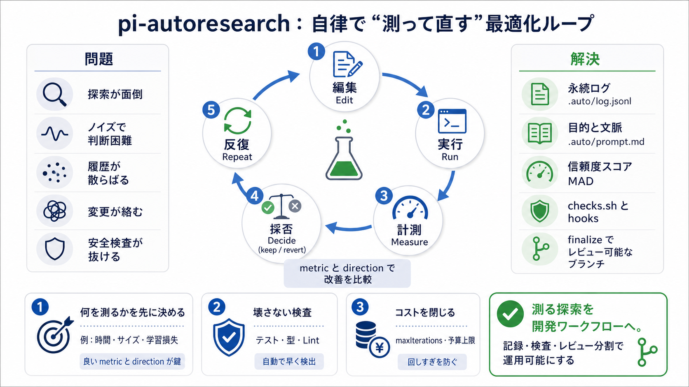

pi-autoresearch
## Confidence scoring After 3+ experiments in a session, pi-autoresearch computes a \\confidence score\\ — how the best …

## Confidence scoring After 3+ experiments in a session, pi-autoresearch computes a \\confidence score\\ — how the best …
Uses Median Absolute Deviation (MAD) of all metric values in the current segment as a robust noise estimator. Confidenc…
Uses Median Absolute Deviation (MAD) of all metric values in the current segment as a robust noise estimator. Confidenc…
Uses Median Absolute Deviation (MAD) of all metric values in the current segment as a robust noise estimator. Confidenc…
Title: RFC: Statistical confidence layer for METRIC improvements · Issue #15 · davebcn87/pi-autoresearch · GitHub ## Nav…